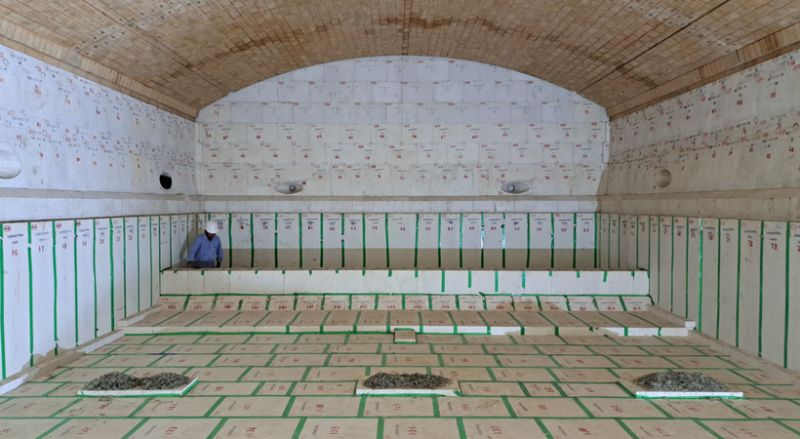

Təzyiq fərqi niyə bu qədər önəmlidir?
Sənayedə bir çox avadanlığın daxili və xarici təzyiq fərqləri müəyyən bir aralıqda saxlanılır. Bu kimi hallara əsasən sənaye tipli böyük sobalarda və atom elektrik stansiyaların reaktor bölməsində rast gəlinir. Xarici ədəbiyyatda "underpressure safety" olaraq adlandırılan bu qoruma tədbiri bir neçə vacib nüansı özündə birləşdirir.
Orta məktəb fizikasından bildiyimiz kimi, qüvvə və ya axın təzyiqin çox olduğu yerdən az olduğu istiqamətə yönəlir. Sənaye sobalarının daxili və xarici təzyiqi yolverilən həddi aşdıqda istifadə olunan materialların zəifləməsinə və sobanın dayanıqlılığının azalmasına gətirib çıxarır.
Digər bir məsələ isə, sobanın daxilindəki yanma prosesi nəticəsində əmələ gələn tullantı qazlarının kiçik boşluqlardan çölə çıxma ehtimalıdır. Bu halların qarşısı məhz təzyiq fərqi vasitəsilə alınır. Xaricdəki təzyiq daha çox olduğu üçün tullantı qazları kiçik boşluqlardan deyil, baca sistemi vasitəsilə çölə çıxır.
Photo Credit: Greg Morris